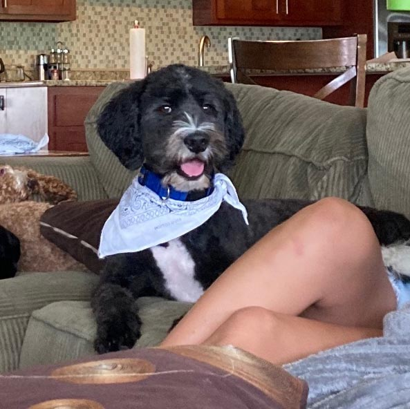
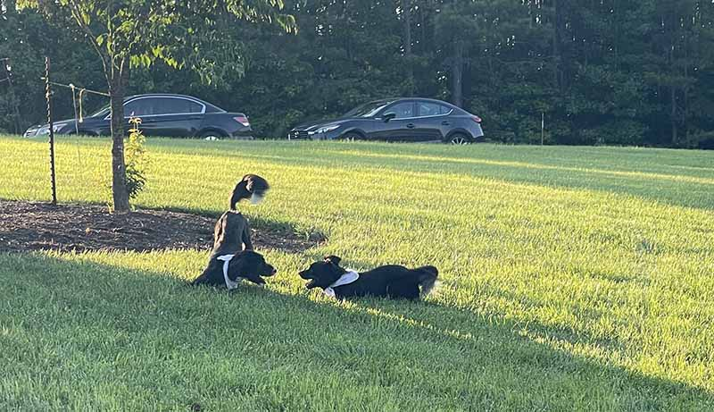
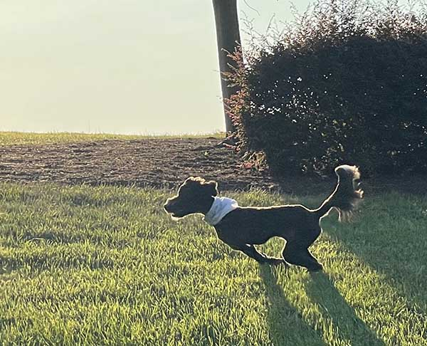
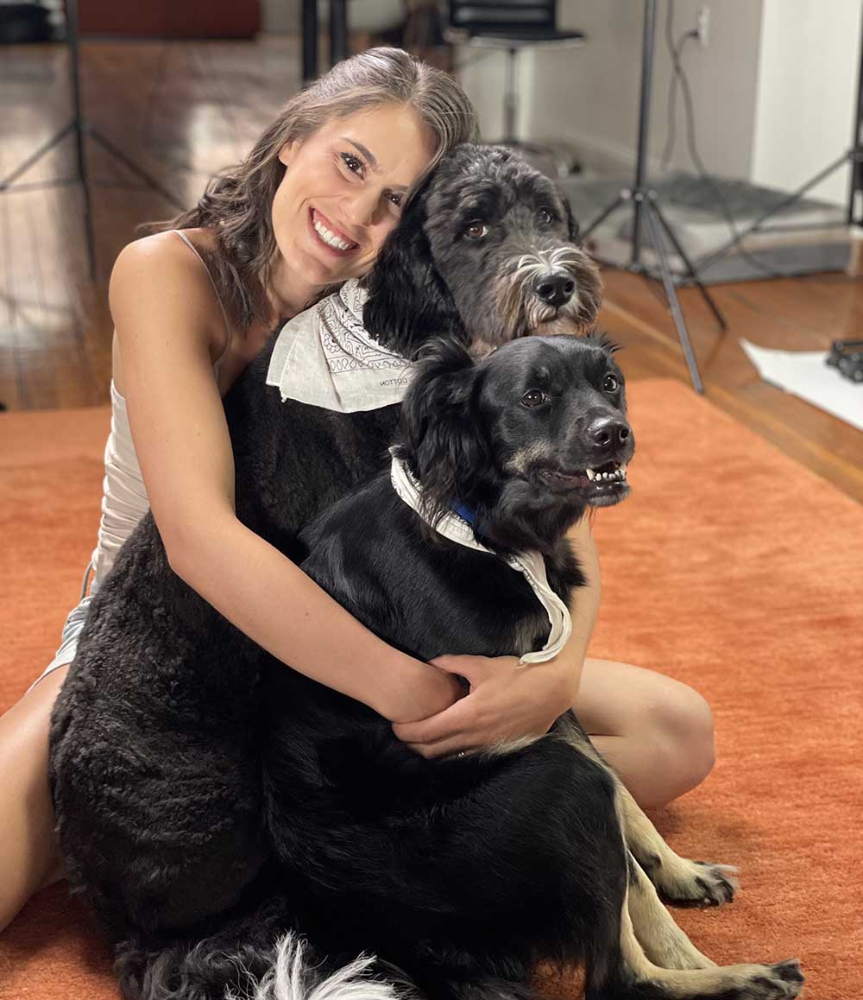

Arya was called in by a man named Michael this Monday morning, who was following her through northern Durham and even onto the freeway when she started running onto it against traffic! After Huck (dog) and Kasper (the guy who was supposed to be taking care of Arya!) followed her for about two miles, and Michael brought up the flank, Arya came back to Huck and is now safely home!
Full story will be posted on this website by next weekend! Till then, you can follow Arya on IG - @aryaspratte
- Kasper
Original website below:
Please call or text 801-941-2737 with any tips
Arya went missing at 8:30a on Saturday, July 17th
She is wearing a blue collar and white bandana, and these are still on her as of the most recent sightings. She also has a white-tipped tail.
She was spotted by multiple witnesses in downtown Durham at 5p on Saturday, likely moving south
She was spotted by multiple witnesses just north of downtown Durham on Sunday late afternoon, likely remaining in area
She is very skittish, so do not chase after her - you can certainly try to draw her if you know how to do so with skittish dogs!
Please call or text 801-941-2737 immediately if you see her
Please share this page with anyone who lives in the area if you want to help out! Or call us to join the search party if you'd like to help out that way!
   